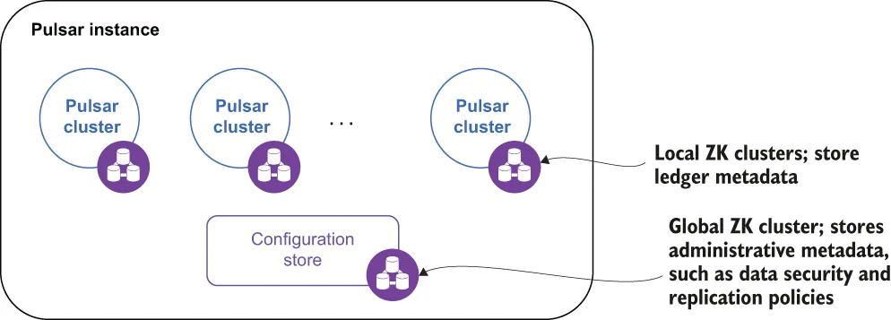

As you may recall from chapter 2, a Pulsar instance is comprised of one or more Pulsar clusters that act together as a single unit and can be administered from a single location, as shown in figure B.3. In fact, one of the biggest reasons for using a Pulsar instance is to enable geo-replication, and only clusters within the same instance can be configured to replicate data amongst themselves. Therefore, enabling asynchronous geo-replication requires us to first create a Pulsar instance.
你应该还记得第 2 章讲过，一个 Pulsar 实例由一个或多个 Pulsar 集群构成，它们作为一个整体协同运作，并且可以从单一位置被管理，如图 B.3 所示。事实上，使用 Pulsar 实例的最大理由之一就是启用异地复制；而且只有同属一个实例的那些集群，才能被配置为在彼此之间复制数据。因此，要启用异步异地复制，就需要我们先创建一个 Pulsar 实例。

Figure B.3 A Pulsar instance can consist of multiple, geographically dispersed clusters.
图 B.3 一个 Pulsar 实例可以由多个地理上分散的集群构成。
A Pulsar instance employs an instance-wide ZooKeeper cluster called the configuration store to retain information that pertains to multiple clusters, such as geo-replication and tenant-level security policies. This allows you to define and manage these policies in a single location. While the complete documentation is available online, I wanted to highlight a few of these steps in the next section.
一个 Pulsar 实例会采用一个实例级范围的 ZooKeeper 集群，称为配置存储（configuration store），用来留存那些涉及多个集群的信息，例如异地复制以及租户级别的安全策略。这让你能够在一个单一位置定义并管理这些策略。虽然完整的文档可以在线获取，但我还是想在下一节中挑出其中若干步骤加以说明。
It is worth noting that the instance-wide ZooKeeper instance should be deployed in such a manner as to make it completely independent from the individual Pulsar clusters so that, in the event of a failure on the part of the instance-wide ZooKeeper ensemble, the individual clusters will be able to continue to function without interruption.
值得一提的是，这个实例级范围的 ZooKeeper 实例应当以这样的方式部署：使它完全独立于各个单独的 Pulsar 集群——这样一来，万一这个实例级范围的 ZooKeeper ensemble 发生故障，各个单独的集群仍能不受中断地继续运行。
Deploying the configuration store
部署配置存储
In addition to installing the individual clusters, creating a multi-cluster Pulsar instance involves deploying a separate ZooKeeper quorum to use as the configuration store. This configuration store should be implemented with its own dedicated ZooKeeper quorum spread across at least three regions. Given the very low expected load on the configuration store servers, you can share the same hosts used for the local ZooKeeper quorum, but will have to do so as either separate ZooKeeper processes or K8s pods, depending on your deployment environment. You will also have to use a different TCP port to avoid port conflicts.
除了安装各个单独的集群之外，创建一个多集群 Pulsar 实例还涉及部署一个单独的 ZooKeeper 仲裁组，用以充当配置存储。这个配置存储应当用其自身专属的一个 ZooKeeper 仲裁组来实现，并且该仲裁组要跨至少三个区域分布。鉴于配置存储各服务器上的预期负载非常低，你可以与本地 ZooKeeper 仲裁组共用同一批主机，但必须把它们作为各自独立的 ZooKeeper 进程或 K8s pod 来运行——具体取决于你的部署环境。你还必须使用一个不同的 TCP 端口，以避免端口冲突。
Listing B.4 ZooKeeper configuration for the configuration store quorum
tickTime=2000
dataDir=/var/lib/zookeeper ❶
clientPort=2185 ❷
initLimit=5
syncLimit=2
server.1=zk2.us-west.example.com:2185:2186 ❸
server.2=zk2.us-central.example.com:2185:2186
server.3=zk2.us-east.example.com:2185:2186
❶ Use a different location for storing the transaction log.
❶ 使用一个不同的位置来存放事务日志。
❷ Use a different port than the local ZK instance.
❷ 使用一个与本地 ZK 实例不同的端口。
❸ The quorum consists of servers from across three regions listening on the same port.
❸ 这个仲裁组由来自三个区域、监听同一端口的各台服务器构成。
Setting up a separate ZooKeeper quorum is fairly straightforward and well documented on the Apache ZooKeeper documentation page. Each ZooKeeper server is contained in a single JAR file, so installation consists of downloading the jar, unpacking it, and creating a configuration file. The default location for this configuration file is conf/zoo.cfg. All of the servers in the new ZooKeeper quorum should have the exact same configuration file, as shown in listing B.4.
搭建一个单独的 ZooKeeper 仲裁组是相当直截了当的，Apache ZooKeeper 文档页面上也对此有充分说明。每一个 ZooKeeper 服务器都被包含在单个 JAR 文件中，因此安装过程就是：下载这个 jar、解包它、然后创建一个配置文件。这个配置文件的默认位置是 conf/zoo.cfg。这个新 ZooKeeper 仲裁组中的所有服务器都应当拥有完全相同的配置文件，如清单 B.4 所示。
Initializing cluster metadata
初始化集群元数据
Now that the secondary ZooKeeper quorum is up and running, the next step is to populate the configuration store with information about all the clusters that will be included in the Pulsar instance. This metadata can be initialized by using the initialize- cluster-metadata command of the Pulsar CLI tool, as shown in the following listing.
既然那个次级 ZooKeeper 仲裁组已经启动并运行，下一步就是往配置存储中填充关于所有将被纳入该 Pulsar 实例的那些集群的信息。这份元数据可以用 Pulsar CLI 工具的 initialize-cluster-metadata 命令来初始化，如下面这份清单所示。
Listing B.5 Initializing the cluster metadata
$ /pulsar/bin/pulsar initialize-cluster-metadata \
--cluster us-west \ ❶
--zookeeper zk1.us-west.example.com:2181 \ ❷
--configuration-store zk1.us-west.example.com:2184 \ ❸
--web-service-url http://pulsar.us-west.example.com:8080/ \
--web-service-url-tls https://pulsar.us-west.example.com:8443/ \
--broker-service-url pulsar://pulsar.us-west.example.com:6650/ \
--broker-service-url-tls pulsar+ssl://pulsar.us-west.example.com:6651/
❶ The name of the cluster that will be used when setting up replication
❶ 在设置复制时将要使用的那个集群的名称。
❷ The local ZK connection string
❷ 本地 ZK 的连接串。
❸ The connection string for the configuration store
❸ 配置存储的连接串。
The command associates all the various connection URLs to a given cluster name and stores that information inside the configuration store. This information is used when replication is enabled to connect the brokers that need to exchange data between them (e.g., replication data from US-West to US-East). You will need to run this command for every Pulsar cluster you are adding to the instance.
这条命令把各个不同的连接 URL 与一个给定的集群名关联起来，并把这些信息存放进配置存储。当复制被启用时，这些信息会被用来连接那些需要在彼此之间交换数据的 broker（例如，把数据从 US-West 复制到 US-East）。对你正在加进这个实例的每一个 Pulsar 集群，你都需要运行一次这条命令。
Configure the services to use the configuration store
把各项服务配置为使用配置存储
After you have populated the configuration store with all the metadata associated with the Pulsar clusters in your instance, you will need to modify a couple of configuration files on every cluster to enable geo-replication. Since geo-replication is accomplished via broker-to-broker communication, the most important one is the conf/broker.conf configuration file, as shown in the following listing.
在你把与实例中各个 Pulsar 集群相关联的全部元数据填充进配置存储之后，你还需要在每一个集群上修改几个配置文件，以启用异地复制。由于异地复制是通过 broker 到 broker 的通信来完成的，其中最重要的一个就是 conf/broker.conf 配置文件，如下面这份清单所示。
Listing B.6 Updated broker.conf for asynchronous geo-replication
# Local ZooKeeper servers
zookeeperServers=zk1.us-west.example.com:2181,zk2.us-
west.example.com:2181,zk3.us-west.example.com:2181 ❶
# Configuration store quorum connection string.
configurationStoreServers=zk2.us-west.example.com:2185,zk2.us-
central.example.com:2185,zk2.us-east.example.com:2185 ❷
clusterName=us-west ❸
❶ Use the local ZK quorum as before.
❶ 照旧使用本地 ZK 仲裁组。
❷ Use the second ZK quorum for the configuration store.
❷ 为配置存储使用第二个 ZK 仲裁组。
❸ Specify the name of the cluster that the broker belongs to.
❸ 指定该 broker 所隶属的那个集群的名称。
Make sure that you set the zookeeperServers parameter to reflect the local quorum and the configurationStoreServers parameter to reflect the configuration store quorum. You also need to specify the name of the cluster to which the broker belongs using the clusterName parameter, taking care to use the value you specified in the initialize-cluster-metadata command. Finally, make sure that the broker and web service ports match the values you provided in the initialize-cluster-metadata command as well. Otherwise, the replication process will fail because the source broker will be attempting communication over the wrong port.
务必确保你把 zookeeperServers 参数设置为反映本地仲裁组、把 configurationStoreServers 参数设置为反映配置存储仲裁组。你还需要用 clusterName 参数指定该 broker 所隶属的集群名称，并注意要使用你在 initialize-cluster-metadata 命令中所指定的那个值。最后，还要确保 broker 端口和 web 服务端口与你在 initialize-cluster-metadata 命令中所提供的那些值相匹配。否则，复制过程将会失败——因为源 broker 会试图通过错误的端口进行通信。
If you are using the service discovery mechanism included with Pulsar, you need to change a few parameters in the conf/discovery.conf configuration file. Specifically, you must set the zookeeperServers parameter to the ZooKeeper quorum connection string of the cluster and the configurationStoreServers setting to the configuration store quorum connection string using the same values used in the broker configuration file. Once you have finished updating all of the necessary configuration files, all of these services will need to be restarted after these changes are made for the new properties to take effect.
如果你正在使用 Pulsar 自带的服务发现机制，那么还需要修改 conf/discovery.conf 配置文件中的几个参数。具体而言，你必须把 zookeeperServers 参数设置为该集群的 ZooKeeper 仲裁组连接串，并把 configurationStoreServers 设置项设置为配置存储的仲裁组连接串——使用与 broker 配置文件中相同的那些取值。一旦你把全部必需的配置文件都更新完毕，在做完这些变更之后，所有这些服务都需要被重启，新的属性才会生效。